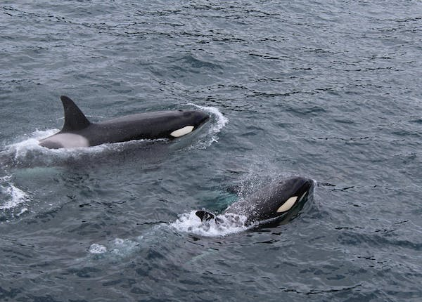

Dolphin
Dolphins are highly intelligent marine mammals that belong to the family Delphinidae. They are known for their playful behavior, remarkable intelligence, and unique adaptations for life in the water
- open oceans
- coastal waters that include bays and inlets
- river basins
- certain inland seas
- gulfs
- channels
Habitat
- fish
- squid
- shrimps
- jellyfish
- octopuses
Diet
- Dolphins have a streamlined body shape, which helps them swim swiftly through the water. They typically have a fusiform body (tapered at both ends) with a prominent dorsal fin on their backs. Their skin is smooth and rubbery, often gray in color, although it can vary among species
- Dolphin species vary in size, ranging from the smallest, such as the Maui's dolphin, which grows to around 4 feet (1.2 meters) and weighs about 90 pounds (40 kilograms), to the largest, such as the killer whale or orca, which can reach lengths of up to 30 feet (9 meters) and weigh over 10 tons (9,000 kilograms)
- Dolphins are highly intelligent animals, known for their problem-solving abilities, social cognition, and complex communication skills. They exhibit self-awareness, demonstrate a wide range of behaviors, and can learn and perform intricate tasks in captivity.
- Dolphins are known for their vocalizations and use a variety of clicks, whistles, and body movements to communicate with one another. These sounds serve various purposes, such as social bonding, navigation, locating prey, and maintaining group cohesion.
- Dolphins are highly social animals and often live in groups known as pods or schools. Pod sizes can vary from a few individuals to several dozen, depending on the species. Within the pod, dolphins engage in cooperative behaviors, communication, and hunting together.
- Dolphins are superb swimmers. They have a dorsal fin that helps with stability and maneuverability in the water. Their tail flukes, which are horizontal, muscular structures, propel them through the water with great speed and agility.
- Dolphins are carnivorous and primarily feed on fish and squid. Different species of dolphins have varying feeding habits and prey preferences. They use echolocation (a type of biological sonar) to locate and track their prey, emitting high-frequency clicks and interpreting the echoes that bounce back.
Characteristics
- Dolphins are known for their playful behavior. They often ride the bow waves created by boats, leap out of the water, and engage in acrobatic displays.They have been observed playing with seaweed, blowing bubble rings, and tossing objects among themselves.
- Dolphins are incredibly agile and fast swimmers. They can reach speeds of up to 20-25 miles per hour (32-40 kilometers per hour). Their streamlined bodies, powerful tails, and efficient swimming techniques allow them to move through the water with grace and speed.
- Dolphins are highly social animals and live in complex social structures. They form groups called pods or schools that can range in size from a few individuals to hundreds. Within the pod, they exhibit strong social bonds, communicate through vocalizations, and cooperate in hunting and raising offspring
- Dolphins are among the most intelligent animals on Earth. They have large brains relative to their body size and exhibit advanced problem-solving abilities. Dolphins can learn complex tasks,recognize themselves in mirrors (a sign of self-awareness), and show creative thinking in various situations.
- Dolphins use echolocation, a biological sonar system, to navigate and locate prey in their underwater environment. They emit clicks and listen to the echoes that bounce back, allowing them to create a detailed auditory map of their surroundings.
- Dolphins have relatively long lifespans compared to many other animals. Depending on the species, they can live anywhere from 20 to 60 years or more. Dolphins are also unique in that they employ a form of unihemispheric sleep, where one half of their brain sleeps while the other remains alert to ensure breathing and keep an eye out for predators.
- There are over 40 recognized species of dolphins, ranging in size, coloration, and habitat. Some well-known species include the bottlenose dolphin, orca (killer whale), common dolphin, spinner dolphin, and dusky dolphin. Each species has its own unique characteristics and behaviors.
- Dolphins often work together in coordinated hunting strategies. They may encircle schools of fish, creating a tight ring or bubble net to trap the fish, or use tail slaps to stun and corral prey. This cooperative behavior enhances their hunting success and strengthens social bonds within the pod.
- Dolphins are known to pass knowledge and behaviors from one generation to the next through cultural transmission. This means that certain feeding techniques, vocalizations, and play behaviors can be learned and shared within specific dolphin communities, contributing to their social and cultural diversity.
- Dolphins have a long history of interaction with humans and have been associated with positive and friendly encounters. They are often portrayed as friendly and helpful creatures in stories and folklore, and they have been known to approach and interact playfully with swimmers, surfers, and boats.
Fun facts
